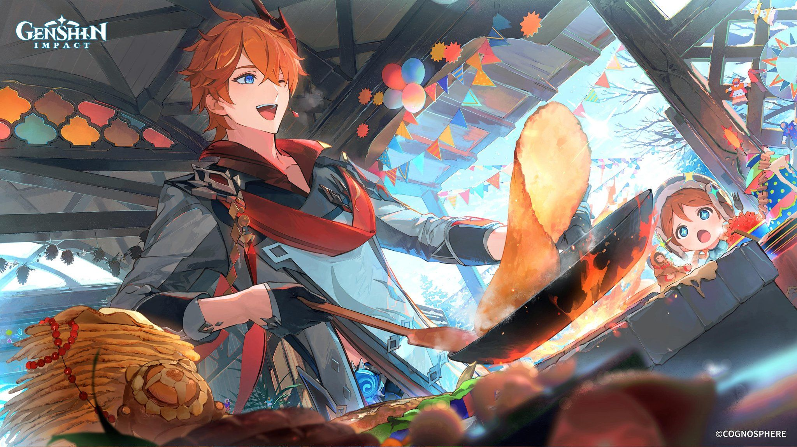
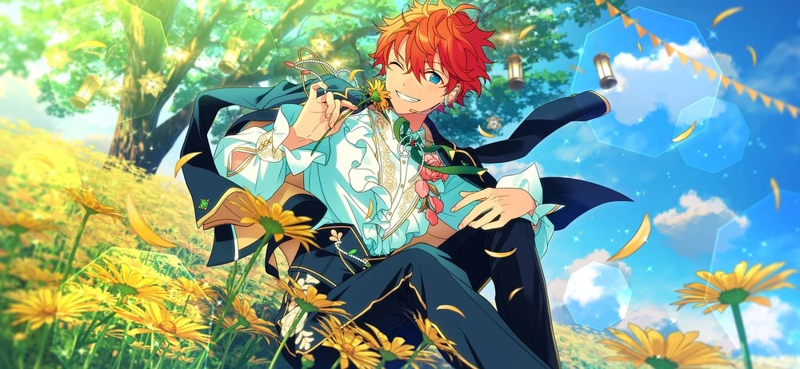
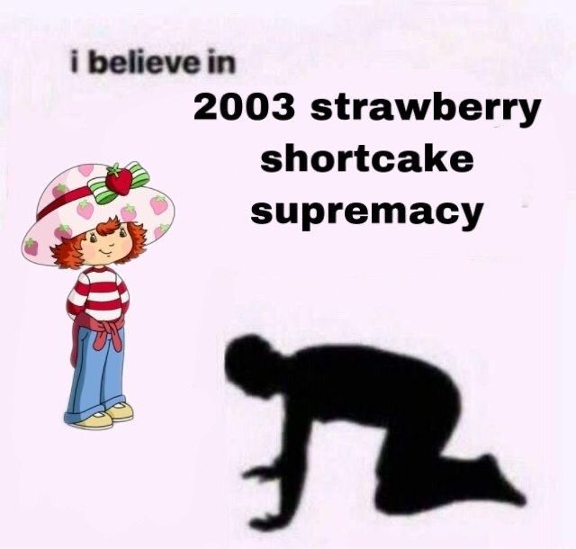

no i do not know why i like characters with orange hair so much. i just do.
Everyone has a favorite character. Some people have multiple favorite characters. I have a few, but they all have one thing in common: orange hair. Why? Let's go on a deep dive to see how this all began...
Tartaglia, codenamed Childe, No. 11 of the Fatui Harbingers. His flags are as red as his hair. He's a warrior and a leader, and he loves to cook and spoil his little brother, Teucer.
Subaru Akehoshi from Ensemble Stars! He's an idol from Japan, so he just sings for a living. He loves sparkles and all things shiny, which is reflected in his bubbly personality. You can read more about him on the Ensemble Stars! Wiki Page
She's the berry bitty girl with berry big possibilities and fruit filled fun is the sercret to her recpies She may be small, no task is too tall She'll be your best bud, just give her a call!
